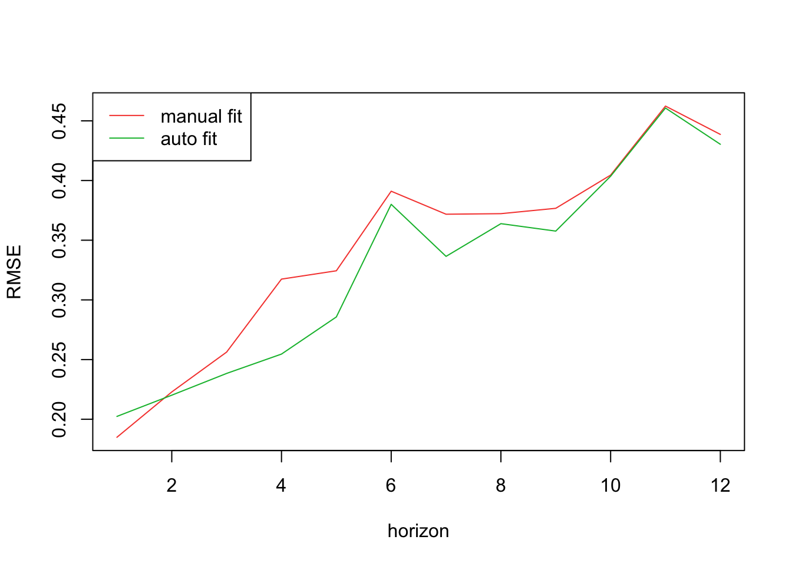

Code
unrate_ts <- ts(df$unrate, start = c(2006, 1), frequency = 12)unrate_ts <- ts(df$unrate, start = c(2006, 1), frequency = 12)The number of arrests made in any city, especially one as large and diverse as New York City, is a figure that is influenced by many variables in addition to time. This means that modelling the number of arrests only on time may result in overlooking valuable information that could be used to fit a model that could forecast arrests even more accurately. Similar work has been done in the past, relating both the economy and labor markets to crime statistics.
We will take that approach here, drawing inspiration on the work mentioned in the introduction by Freeman in which he looks at “the way decisions interact in a market setting” (Freeman 1999). He exhibits an important understanding of the influence economic factors have on crime, treating crime rates as another variable in our complex economic system. Looking at the labor market would be beneficial as well, as in the 1980’s and 90’s crime was seen to be closely related to unemployment rates (Gould, Weinberg, and Mustard 2002).
Another variable that might be useful to look at is the state of the current election cycle. It is possible that when public officials are up for re-election, they might be more incentivized to take more action to lower crime rates.
Two types of models will be fit here. We will use an ARIMAX or SARIMAX model when looking at the effect of one or more exogenous variables in predicting the number of arrests. We will use a VAR model when looking at how crime and other time series variables are influenced by each other. The specific models are listed below:
(ARIMAX) Total Arrests ~ Unemployment Rate
(ARIMAX) Total Arrests ~ Election Year
(ARIMAX) Murder ~ Unemployment Rate + GDP
(VAR) Robbery ~ Unemployment Rate
(VAR) Controlled Substance Possession ~ Marijuana Possession
We have a univariate time series in total arrests and we want to see the effect the exogenous variable of unemployment rate has on that time series. We will fit an ARIMAX model, Total Arrests ~ Unemployment Rate. Unemployment data is for the New York City Metropolitan Area and obtained from here.
month <- as.Date(arrests_by_crime$month)
dd <- data.frame(month, arrests = arrests_ts, unrate = unrate_ts) %>%
rename(arrests = Series.1)
kable(head(dd))| month | arrests | unrate |
|---|---|---|
| 2006-01-01 | 0.5041010 | 5.0 |
| 2006-02-01 | 0.2405968 | 5.2 |
| 2006-03-01 | 0.8459733 | 4.8 |
| 2006-04-01 | 0.4411907 | 4.5 |
| 2006-05-01 | 0.6487347 | 4.4 |
| 2006-06-01 | 0.4296871 | 4.5 |
dd.ts <- ts(dd, start = c(2006, 1), frequency = 12)
autoplot(dd.ts[,c(2,3)], facets = TRUE) +
xlab("Year") + ylab("") +
ggtitle("Variables influencing Arrests in NYC")There looks to be some relation between these two variables, with the spike in 2020 in unemployment rate being at the same time as the low arrest rate, though we should fit a model to see if this relationship is substantial.
xreg <- cbind(unrate = dd.ts[,"unrate"])
auto_model <- auto.arima(dd.ts[,"arrests"], xreg = xreg)
summary(auto_model)Series: dd.ts[, "arrests"]
Regression with ARIMA(0,1,2)(2,0,0)[12] errors
Coefficients:
ma1 ma2 sar1 sar2 xreg
-0.4433 -0.2617 0.4377 0.3516 -0.0498
s.e. 0.0716 0.0717 0.0636 0.0664 0.0125
sigma^2 = 0.04707: log likelihood = 19.18
AIC=-26.36 AICc=-25.93 BIC=-6.48
Training set error measures:
ME RMSE MAE MPE MAPE MASE
Training set -0.008752053 0.2137413 0.149255 18.41134 68.24703 0.4816106
ACF1
Training set -0.02046308checkresiduals(auto_model)
Ljung-Box test
data: Residuals from Regression with ARIMA(0,1,2)(2,0,0)[12] errors
Q* = 23.882, df = 20, p-value = 0.2476
Model df: 4. Total lags used: 24We have a SARIMAX model, a regression model with ARIMA(0,1,2)(2,0,0)[12] errors.
We first fit a linear regression model predicting arrests using unemployment rate. The we will fit a SARIMA model for the residuals.
fit.reg <- lm(arrests ~ unrate, data = dd)
summary(fit.reg)
Call:
lm(formula = arrests ~ unrate, data = dd)
Residuals:
Min 1Q Median 3Q Max
-2.7469 -0.7450 0.3090 0.8008 1.3700
Coefficients:
Estimate Std. Error t value Pr(>|t|)
(Intercept) -0.31028 0.19502 -1.591 0.113
unrate 0.04907 0.02880 1.704 0.090 .
---
Signif. codes: 0 '***' 0.001 '**' 0.01 '*' 0.05 '.' 0.1 ' ' 1
Residual standard error: 0.9953 on 202 degrees of freedom
Multiple R-squared: 0.01416, Adjusted R-squared: 0.009283
F-statistic: 2.902 on 1 and 202 DF, p-value: 0.09res.fit <- ts(residuals(fit.reg), start = c(2006, 1), frequency = 12)
ggtsdisplay(res.fit)
ggtsdisplay(res.fit %>% diff())
ggtsdisplay(res.fit %>% diff() %>% diff(12))We will try the following parameters:
i <- 1
temp <- data.frame()
ls <- matrix(rep(NA,9*28), nrow=28)
for(p in c(1,4)){
for(q in c(1,4)){
for(d in c(0,1)){
for(P in c(1)){
for(Q in c(1,2,3)){
for(D in c(0,1)){
if(p + d + q + P + D + Q<= 9){
tryCatch({
model <- Arima(res.fit, order = c(p, d, q), seasonal = c(P, D, Q))
ls[i,] <- c(p, d, q, P, D, Q, model$aic, model$bic, model$aicc)
}, error = function(err) {
cat()
}, finally = {
i <- i + 1
})
}
}
}
}
}
}
}
temp <- as.data.frame(ls)
names(temp) <- c("p","d","q","P", "D", "Q", "AIC","BIC","AICc")kable(temp[which.min(temp$AIC),], digits = 2)
kable(temp[which.min(temp$BIC),], digits = 2)
kable(temp[which.min(temp$AICc),], digits = 2)| p | d | q | P | D | Q | AIC | BIC | AICc | |
|---|---|---|---|---|---|---|---|---|---|
| 12 | 1 | 1 | 1 | 1 | 1 | 3 | -9.62 | 13.15 | -9 |
| p | d | q | P | D | Q | AIC | BIC | AICc | |
|---|---|---|---|---|---|---|---|---|---|
| 8 | 1 | 1 | 1 | 1 | 1 | 1 | -9.3 | 6.96 | -8.97 |
| p | d | q | P | D | Q | AIC | BIC | AICc | |
|---|---|---|---|---|---|---|---|---|---|
| 12 | 1 | 1 | 1 | 1 | 1 | 3 | -9.62 | 13.15 | -9 |
It is clear that the best model is one with parameters \(p=1, d=1, q=1, P=1, D=1, Q=3\). We now check the model diagnostics.
set.seed(621)
model_output <- capture.output(sarima(res.fit, 1, 1, 1, 1, 1, 3, 12))The Ljung-Box statistic p-values suggest that there is no correlation between residuals, meaning we have a good enough model. We will proceed with the model SARIMA(1, 1, 1)(1, 1, 2)12. The information criteria are all similar between the auto model and this model. We will proceed with this model.
model_fit <- Arima(res.fit, order = c(1, 1, 1), seasonal = c(1, 1, 3))
plot(res.fit, col = "blue")
lines(fitted(model_fit), col = "green")
legend(x = "topright", legend = c("res.fit", "fit1"), fill = 4:1)The the fitted model looks fairly similar to the actual model.
# minimum data length for fitting
k <- 48
n <- length(res.fit)
st <- tsp(res.fit)[1] + (k - 2)/12 # ending point: October 2009
rmse1 <- matrix(NA,n-k,12)
rmse2 <- matrix(NA,n-k,12)
for(i in seq(10, n - k, by = 5)) {
tryCatch({
xtrain <- window(res.fit, end = st + i/12)
xtest <- window(res.fit, start = st + (i + 1)/12, end = st + (i + 12)/12)
fit1 <- Arima(xtrain,
order = c(1, 1, 1),
seasonal = c(1, 1, 3),
method = "ML")
fcast1 <- forecast(fit1, h = 12)
fit2 <- Arima(xtrain,
order = c(0, 1, 2),
seasonal = c(2, 0, 0),
method = "ML")
fcast2 <- forecast(fit2, h = 12)
rmse1[i, 1:length(xtest)] <- sqrt((fcast1$mean-xtest)^2)
rmse2[i, 1:length(xtest)] <- sqrt((fcast2$mean-xtest)^2)
}, error = function(err) {
cat()
})
}
plot(1:12, colMeans(rmse1,na.rm=TRUE), type="l", col=2, xlab="horizon", ylab="RMSE")
lines(1:12, colMeans(rmse2,na.rm=TRUE), type="l", col=3, xlab="horizon", ylab="RMSE2")
legend("topleft",legend=c("manual fit","auto fit"),col=2:3,lty=1)
The manual fit looks slightly better, we will continue and forecast with that model.
model_fit %>% forecast %>% autoplot()
insert model here
month <- as.Date(arrests_by_crime$month)
dd <- data.frame(month, murder = murder_ts, unrate = unrate_ts) %>%
rename(murder = Series.1)
kable(head(dd))| month | murder | unrate |
|---|---|---|
| 2006-01-01 | 0.2787145 | 5.0 |
| 2006-02-01 | -1.1396010 | 5.2 |
| 2006-03-01 | -0.3887281 | 4.8 |
| 2006-04-01 | 0.0284236 | 4.5 |
| 2006-05-01 | -0.3887281 | 4.4 |
| 2006-06-01 | -0.1801522 | 4.5 |
dd.ts <- ts(dd, start = c(2006, 1), frequency = 12)
autoplot(dd.ts[,c(2,3)], facets = TRUE) +
xlab("Year") + ylab("") +
ggtitle("Variables influencing Arrests in NYC")
There looks to be some relation between these two variables, though we should fit a model to see if this relationship is substantial.
xreg <- cbind(unrate = dd.ts[,"unrate"])
auto_model <- auto.arima(dd.ts[,"murder"], xreg = xreg)
summary(auto_model)Series: dd.ts[, "murder"]
Regression with ARIMA(0,1,1) errors
Coefficients:
ma1 xreg
-0.7259 -0.0206
s.e. 0.0674 0.0379
sigma^2 = 0.4875: log likelihood = -214.49
AIC=434.98 AICc=435.1 BIC=444.92
Training set error measures:
ME RMSE MAE MPE MAPE MASE
Training set 0.043429 0.6930606 0.5283975 12.96559 166.7963 0.6966557
ACF1
Training set 0.05571558checkresiduals(auto_model)
Ljung-Box test
data: Residuals from Regression with ARIMA(0,1,1) errors
Q* = 49.236, df = 23, p-value = 0.001159
Model df: 1. Total lags used: 24We have an ARIMAX model, a regression model with ARIMA(0,1,1) errors.
We first fit a linear regression model predicting arrests using unemployment rate. The we will fit an ARIMA model for the residuals.
fit.reg <- lm(murder ~ unrate, data = dd)
summary(fit.reg)
Call:
lm(formula = murder ~ unrate, data = dd)
Residuals:
Min 1Q Median 3Q Max
-1.5842 -0.6704 -0.2491 0.2845 3.2433
Coefficients:
Estimate Std. Error t value Pr(>|t|)
(Intercept) 0.23933 0.19558 1.224 0.223
unrate -0.03785 0.02889 -1.310 0.192
Residual standard error: 0.9982 on 202 degrees of freedom
Multiple R-squared: 0.008426, Adjusted R-squared: 0.003517
F-statistic: 1.717 on 1 and 202 DF, p-value: 0.1916res.fit <- ts(residuals(fit.reg), start = c(2006, 1), frequency = 12)
ggtsdisplay(res.fit)
ggtsdisplay(res.fit %>% diff())
We will try the following parameters:
i <- 1
temp <- data.frame()
ls <- matrix(rep(NA,6*5), nrow=5)
for(p in c(1,4)){
for(q in c(1,4)){
for(d in c(0,1)){
if(p + d + q + P + D + Q<= 9){
tryCatch({
model <- Arima(res.fit, order = c(p, d, q))
ls[i,] <- c(p, d, q, model$aic, model$bic, model$aicc)
}, error = function(err) {
cat()
}, finally = {
i <- i + 1
})
}
}
}
}
temp <- as.data.frame(ls)
names(temp) <- c("p","d","q", "AIC","BIC","AICc")kable(temp[which.min(temp$AIC),], digits = 2)
kable(temp[which.min(temp$BIC),], digits = 2)
kable(temp[which.min(temp$AICc),], digits = 2)| p | d | q | AIC | BIC | AICc | |
|---|---|---|---|---|---|---|
| 2 | 1 | 1 | 1 | 433.24 | 443.18 | 433.36 |
| p | d | q | AIC | BIC | AICc | |
|---|---|---|---|---|---|---|
| 2 | 1 | 1 | 1 | 433.24 | 443.18 | 433.36 |
| p | d | q | AIC | BIC | AICc | |
|---|---|---|---|---|---|---|
| 2 | 1 | 1 | 1 | 433.24 | 443.18 | 433.36 |
It is clear that the best model is one with parameters \(p=1, d=1, q=1\). We now check the model diagnostics.

The Ljung-Box statistic p-values suggest there may be some correlation between residuals, thoug the normal Q-Q plot looks fairly linear. We can proceed with the model build process.
model_fit <- Arima(res.fit, order = c(1, 1, 1))
plot(res.fit, col = "blue")
lines(fitted(model_fit), col = "green")
legend(x = "topright", legend = c("res.fit", "fit1"), fill = 4:1)
The the fitted model looks fairly similar to the actual model.
Insert cross validation
model_fit %>% forecast %>% autoplot()Adding unemployment rate resulted in little change from the previous model, suggesting that the two are not related.
month <- as.Date(arrests_by_crime$month)
dd <- data.frame(month, robbery = robbery_ts, unrate = unrate_ts) %>%
rename(robbery = Series.1)
kable(head(dd))| month | robbery | unrate |
|---|---|---|
| 2006-01-01 | 1.2970231 | 5.0 |
| 2006-02-01 | 0.0812727 | 5.2 |
| 2006-03-01 | 1.3571426 | 4.8 |
| 2006-04-01 | -0.2660846 | 4.5 |
| 2006-05-01 | 1.2369036 | 4.4 |
| 2006-06-01 | 1.7712994 | 4.5 |
dd.ts <- ts(dd, start = c(2006, 1), frequency = 12)
autoplot(dd.ts[,c(2,3)], facets = TRUE) +
xlab("Year") + ylab("") +
ggtitle("Variables influencing Robbery Arrests in NYC")There looks to be some relation between these two variables, with the spike in 2020 in unemployment rate being at the same time as the low arrest rate, though we should fit a model to see if this relationship is substantial.
VARselect(dd[,c(2,3)], lag.max = 10, type = "both")$selection
AIC(n) HQ(n) SC(n) FPE(n)
3 3 3 3
$criteria
1 2 3 4 5 6
AIC(n) -1.2058407 -1.3637208 -1.4750019 -1.4575550 -1.4631654 -1.4722165
HQ(n) -1.1512737 -1.2818704 -1.3658681 -1.3211377 -1.2994647 -1.2812322
SC(n) -1.0710836 -1.1615852 -1.2054878 -1.1206624 -1.0588943 -1.0005668
FPE(n) 0.2994437 0.2557177 0.2287997 0.2328474 0.2315755 0.2295318
7 8 9 10
AIC(n) -1.4410391 -1.4347946 -1.4294481 -1.4061713
HQ(n) -1.2227714 -1.1892435 -1.1566135 -1.1060532
SC(n) -0.9020109 -0.8283880 -0.7556629 -0.6650076
FPE(n) 0.2368595 0.2384194 0.2397933 0.2455606Clearly p = 3 is a good parameter, we will also try VAR(1) in addition to VAR(3)
summary(vars::VAR(dd[, c(2,3)], p = 1, type = "both"))
summary(vars::VAR(dd[, c(2,3)], p = 3, type = "both"))
VAR Estimation Results:
=========================
Endogenous variables: robbery, unrate
Deterministic variables: both
Sample size: 203
Log Likelihood: -446.854
Roots of the characteristic polynomial:
0.9406 0.2057
Call:
vars::VAR(y = dd[, c(2, 3)], p = 1, type = "both")
Estimation results for equation robbery:
========================================
robbery = robbery.l1 + unrate.l1 + const + trend
Estimate Std. Error t value Pr(>|t|)
robbery.l1 0.20839 0.06938 3.004 0.00301 **
unrate.l1 -0.05831 0.01950 -2.990 0.00314 **
const 1.39536 0.19884 7.018 3.47e-11 ***
trend -0.01003 0.00118 -8.495 4.60e-15 ***
---
Signif. codes: 0 '***' 0.001 '**' 0.01 '*' 0.05 '.' 0.1 ' ' 1
Residual standard error: 0.6477 on 199 degrees of freedom
Multiple R-Squared: 0.5853, Adjusted R-squared: 0.579
F-statistic: 93.62 on 3 and 199 DF, p-value: < 2.2e-16
Estimation results for equation unrate:
=======================================
unrate = robbery.l1 + unrate.l1 + const + trend
Estimate Std. Error t value Pr(>|t|)
robbery.l1 -0.033302 0.089298 -0.373 0.7096
unrate.l1 0.937992 0.025102 37.367 <2e-16 ***
const 0.511873 0.255939 2.000 0.0469 *
trend -0.001216 0.001519 -0.800 0.4244
---
Signif. codes: 0 '***' 0.001 '**' 0.01 '*' 0.05 '.' 0.1 ' ' 1
Residual standard error: 0.8337 on 199 degrees of freedom
Multiple R-Squared: 0.884, Adjusted R-squared: 0.8822
F-statistic: 505.5 on 3 and 199 DF, p-value: < 2.2e-16
Covariance matrix of residuals:
robbery unrate
robbery 0.41953 -0.01788
unrate -0.01788 0.69508
Correlation matrix of residuals:
robbery unrate
robbery 1.00000 -0.03312
unrate -0.03312 1.00000
VAR Estimation Results:
=========================
Endogenous variables: robbery, unrate
Deterministic variables: both
Sample size: 201
Log Likelihood: -407.212
Roots of the characteristic polynomial:
0.9289 0.6725 0.5582 0.5582 0.3277 0.3277
Call:
vars::VAR(y = dd[, c(2, 3)], p = 3, type = "both")
Estimation results for equation robbery:
========================================
robbery = robbery.l1 + unrate.l1 + robbery.l2 + unrate.l2 + robbery.l3 + unrate.l3 + const + trend
Estimate Std. Error t value Pr(>|t|)
robbery.l1 0.117336 0.069210 1.695 0.091619 .
unrate.l1 -0.081983 0.055853 -1.468 0.143772
robbery.l2 0.192277 0.068429 2.810 0.005467 **
unrate.l2 -0.090901 0.087309 -1.041 0.299115
robbery.l3 0.213591 0.070565 3.027 0.002808 **
unrate.l3 0.146713 0.055323 2.652 0.008669 **
const 0.786443 0.230902 3.406 0.000802 ***
trend -0.006095 0.001464 -4.162 4.74e-05 ***
---
Signif. codes: 0 '***' 0.001 '**' 0.01 '*' 0.05 '.' 0.1 ' ' 1
Residual standard error: 0.6101 on 193 degrees of freedom
Multiple R-Squared: 0.6397, Adjusted R-squared: 0.6267
F-statistic: 48.96 on 7 and 193 DF, p-value: < 2.2e-16
Estimation results for equation unrate:
=======================================
unrate = robbery.l1 + unrate.l1 + robbery.l2 + unrate.l2 + robbery.l3 + unrate.l3 + const + trend
Estimate Std. Error t value Pr(>|t|)
robbery.l1 -0.152458 0.086542 -1.762 0.07971 .
unrate.l1 1.304373 0.069839 18.677 < 2e-16 ***
robbery.l2 0.186272 0.085565 2.177 0.03070 *
unrate.l2 -0.562589 0.109173 -5.153 6.31e-07 ***
robbery.l3 0.154524 0.088236 1.751 0.08149 .
unrate.l3 0.203963 0.069177 2.948 0.00359 **
const 0.165255 0.288726 0.572 0.56774
trend 0.001686 0.001831 0.921 0.35835
---
Signif. codes: 0 '***' 0.001 '**' 0.01 '*' 0.05 '.' 0.1 ' ' 1
Residual standard error: 0.7629 on 193 degrees of freedom
Multiple R-Squared: 0.9055, Adjusted R-squared: 0.9021
F-statistic: 264.2 on 7 and 193 DF, p-value: < 2.2e-16
Covariance matrix of residuals:
robbery unrate
robbery 0.37226 -0.05351
unrate -0.05351 0.58205
Correlation matrix of residuals:
robbery unrate
robbery 1.000 -0.115
unrate -0.115 1.000ts <- ts(dd[,c(2,3)], start = c(2006, 1), frequency = 12)
k <- 72
rmse1 <- matrix(NA, 132, 2)
rmse2 <- matrix(NA, 132, 2)
year <- c()
st <- tsp(ts)[1] + (k - 1)/12
for(i in 1:11) {
xtrain <- window(ts, end=st + i-1)
xtest <- window(ts, start=st + (i-1) + 1/12, end=st + i)
# first model
fit <- VAR(ts, p=1, type='both')
fcast <- predict(fit, n.ahead = 12)
frob<-fcast$fcst$robbery
funr<-fcast$fcst$unrate
ff<-data.frame(frob[,1],funr[,1]) #collecting the forecasts for 2 variables
year<-st + (i-1) + 1/12 #starting year
ff<-ts(ff,start=c(year,1),frequency = 12)
a = 12*i-11
b= 12*i
tryCatch({
rmse1[c(a:b),] <- sqrt((ff-xtest)^2)
}, error = function(err) {
cat(a, b)
rmse1[c(a:b),] <- sqrt((ff-xtest)^2)
})
# second model
fit2 <- VAR(ts, p=3, type='both')
fcast2 <- predict(fit2, n.ahead = 12)
frob<-fcast2$fcst$robbery
funr<-fcast2$fcst$unrate
ff2<-data.frame(frob[,1],funr[,1]) #collecting the forecasts for 3 variables
year<-st + (i-1) + 1/12 #starting year
ff2<-ts(ff2,start=c(year,1),frequency = 12)
a = 12*i-11
b= 12*i
tryCatch({
rmse2[c(a:b),] <- sqrt((ff2-xtest)^2)
}, error = function(err) {
cat(a, b)
rmse2[c(a:b),] <- sqrt((ff2-xtest)^2)
})
}yr = rep(c(2012:2022),each =12) #year
m = rep(paste0(1:12),11) #month
rmse1 <- data.frame(yr,m,rmse1)
rmse1$date <- as.Date(paste(rmse1$yr, rmse1$m, "01", sep = "-"))
names(rmse1) <- c("Year", "Month","robbery","unemployment", "Date")
rmse2 <- data.frame(yr,m,rmse2)
rmse2$date <- as.Date(paste(rmse2$yr, rmse2$m, "01", sep = "-"))
names(rmse2) <- c("Year", "Month","robbery","unemployment", "Date")
ggplot() +
geom_line(data = rmse1, aes(x = Date, y = robbery),color = "blue") +
geom_line(data = rmse2, aes(x = Date, y = robbery),color = "red") +
labs(
title = "CV RMSE for robbery",
x = "Date",
y = "RMSE",
guides(colour=guide_legend(title="Fit")))ggplot() +
geom_line(data = rmse1, aes(x = Date, y = unemployment),color = "blue") +
geom_line(data = rmse2, aes(x = Date, y = unemployment),color = "red") +
labs(
title = "CV RMSE for unemployment",
x = "Date",
y = "RMSE",
guides(colour=guide_legend(title="Fit")))
mean(rmse1$robbery)[1] 0.8851127mean(rmse2$robbery)[1] 0.8789264mean(rmse1$unemployment)[1] 2.254941mean(rmse2$unemployment)[1] 1.948857The models are very close in performance, but it looks like VAR(3) is slightly better so we will forecast with that model.
fit <- VAR(ts, p = 3, type = "both")
plot(forecast(fit, 24))Insert model here